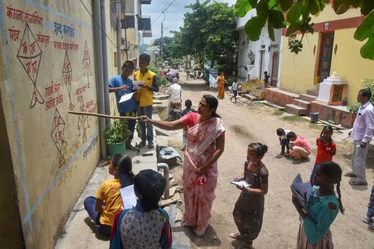

India
We Are Indians And How We Treate people.

Goverment Ration
Earlier, around 40% of ration food got lost or diverted before reaching people. Now it’s improved (around 10–28%), but it still varies by state meaning some of the subsidized food still disappears in the supply chain.
